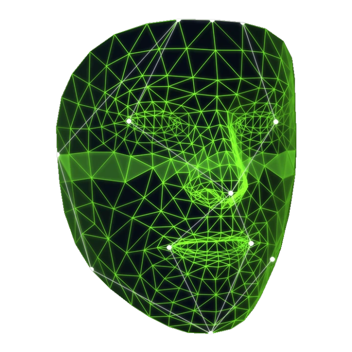
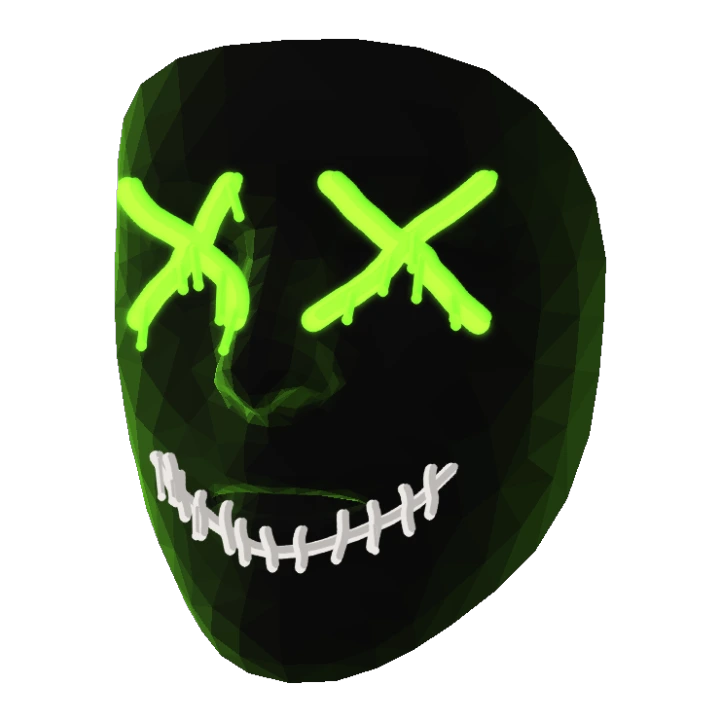
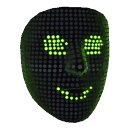
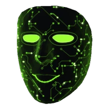
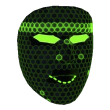
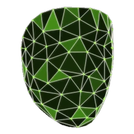
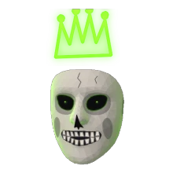
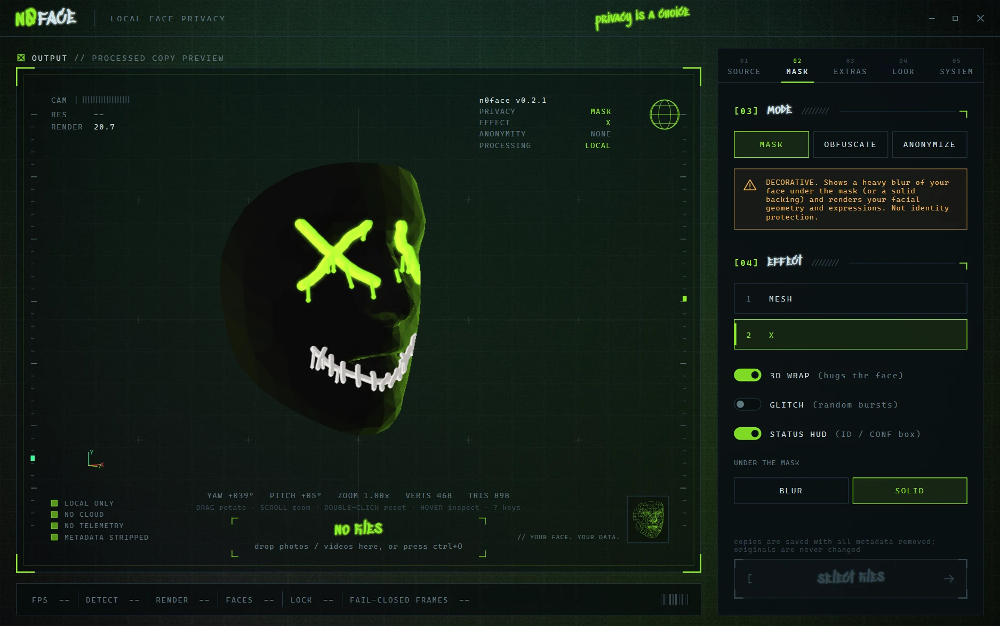

MASK
DecorativeStylized masks over a blur of your face, or a solid backing. Shows your expressions.
Doesn't hide your facial geometry or expressions.
v0.2.1 · free for Windows
n0face swaps your face for a mask on your webcam, photos and videos, live, on your own PC. No cloud. No accounts. No telemetry.
Open source (AGPL-3.0) · Windows 10 / 11 · 98 MB
Animation: a 3D face mesh rotates while a scan line turns it into redacted blocks.
[01] How it works ////////
An on-device model finds 478 points on your face. A second one keeps track of your head when you look down or turn away.
Your face becomes a mask that follows your expressions, a glitch, or a full-head cover. Lose tracking and the frame goes dark until you're found again.
Pick the n0face camera in Discord, Zoom or OBS. Or drop in photos and videos and get masked copies with the metadata stripped.
[02] Masks ////////


Under every mask: BLUR (a heavy blur of your face) or SOLID (hidden completely).
Five more masks, accessories that ride on your head in 3D, and full customization. Cosmetic only: everything that protects you stays free. Buying it funds development and code signing.
About PRO →




[03] Modes ////////
We'll be straight with you: no mode makes you unidentifiable. Your voice, body and room can still give you away. Here's exactly what each one does.
Stylized masks over a blur of your face, or a solid backing. Shows your expressions.
Doesn't hide your facial geometry or expressions.
Replaces your face pixels with glitch blocks or static, generated from scratch.
Doesn't hide face outline, hair, ears, body or background.
Covers your whole head with a shape-hiding cover and holds it longer when tracking drops.
Doesn't hide body, voice, background or anything you say.
[04] Privacy ////////

Detection runs on your CPU. Frames never leave your PC.
Once the model loads, n0face switches its own networking off.
If tracking drops for more than a few frames, the whole frame is hidden.
Live camera frames are never written to disk.
Masked copies of photos and videos carry no EXIF or GPS. Originals are never changed.
Every line is on GitHub under AGPL-3.0. Read it, build it yourself.